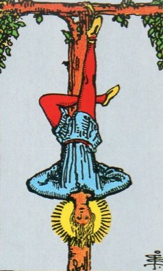
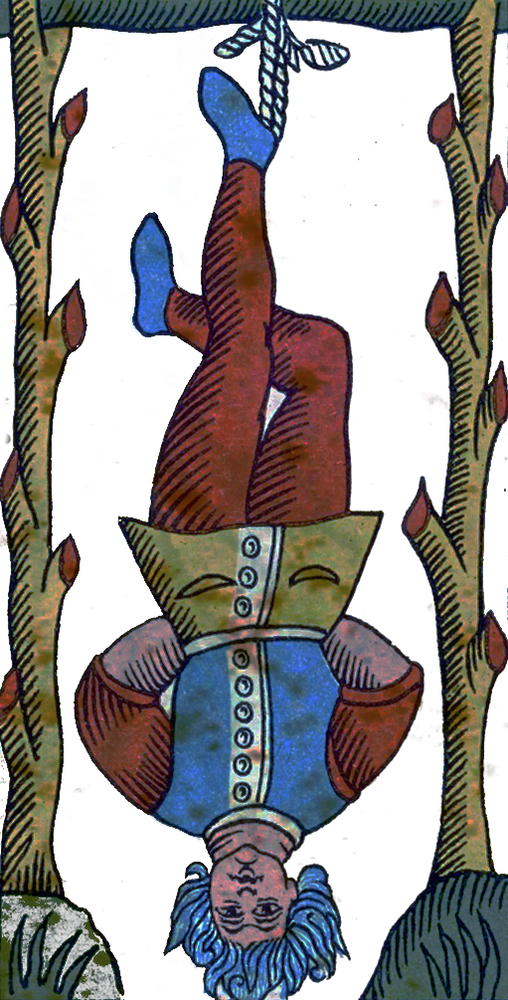
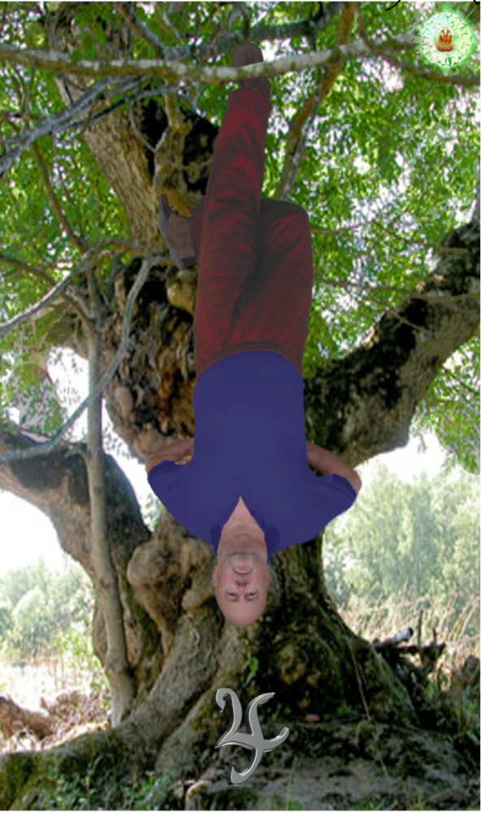
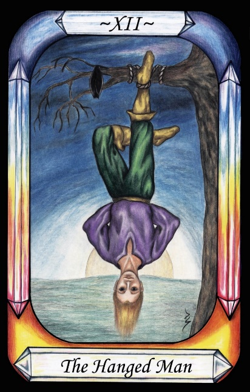
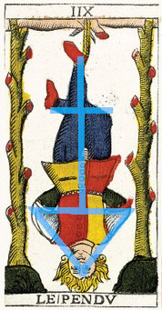

The Hanged Man




Representation |
A thief, representing Jupiter’s greed. |
Meaning |
Punishment for Jupiter’s mortal sin of greed. |
Opposite card |
Justice, where Solomon dispenses Justice in the human world, by permission of Jupiter |
Function |
This card is tricky, as it seems to represent two different concepts but, in the end, they are the same. On the one hand, the Hanged Man may represent the exorcism of Jupiter. On the other, it may represent the Descent of Man into materialism.
[P13] The Demiurge made the seven planetary Governors from the elements of nature. These seven encompass the entire world that is perceived by the senses, and their rule is called Fate.
[Jupiter=The Hanged Man, …]
[P66] To Jupiter, Striving for excessive Wealth by evil means
The Hanged Man is a thief, punished according to the renaissance practice of hanging them by one foot. Is this Jupiter’s striving for excessive wealth by evil means, or is mankind obsessed with the wealth of the material, forgetting his spiritual nature? Perhaps it is both, showing mankind’s acquisition of Jupiter’s greed during his descent.
Naturally, the opposite polarity to the thief is Justice. Plato says that Justice is a universal property of heaven. It is only in the material plane, which includes the governors, that the mortal sins manifest.
RWS Imagery
A man hangs by his ankle, inverted, from a rough timber frame. His body takes a form reminiscent of some initiatory practices, and also reminiscent of the alchemical symbol for Sulphur. The uprights have the stubs of branches that have been cut off, and the man is suspended from the seventh position from the bottom.
Mis-Interpretation
There is a common belief that the Hanged Man is Odin on the world tree, but the analysis of polarities, and the more recent discovery of the mechanism of punishment of thieves seem to contradict this. Saturn is better placed as the Hermit, due to his obsession with knowledge, and with his wife – Absolute Knowledge – in the Strength card.
Alchemy
The Hanged Man has a distinctive body position, with a cross made from the legs, and a triangle by head and arms. Together, these make the symbol for Sulphur, only inverted.

Figure 18 - Hanged Man as Sulphur
Alchemists put Sulphur into a special trinity, as follows
Also note that there are seven levels of red cut branches. As always, the number seven refers to the seven Governors.
From this it can be implied that the card is the spirit of man, descending past the seven Governors, picking up influences from them. It is therefore not just Jupiter’s sin, but a reminder of all seven.